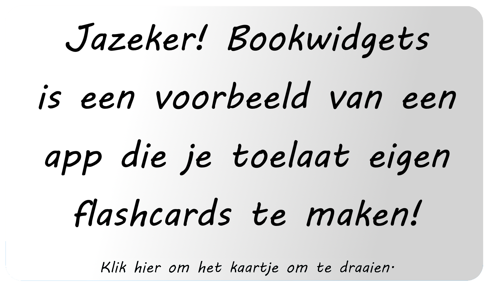
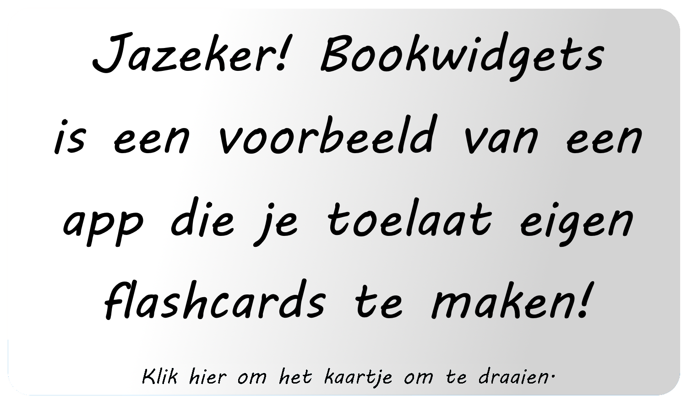

Voor mijn schriftelijke examentaak ben ik een kijkstage gaan volgen in de Rozenberg in Mol. Hierbij heb ik gelet op verschillende theoretische inzichten
die tijdens de les zijn aangehaald. Mijn doel hierbij is om te zien hoe deze in de praktijk terug te vinden zijn. Ik gebruik hierbij zowel persoonlijke
observaties die ik zag gedurende de lessen, als gesprekken met leerlingen en leerkrachten.
Klik op een label bovenaan om dit onderdeel te verkennen.
Bij binnenklasdifferentiatie worden er drie verschillen tussen leerlingen centraal gezet. In dit deel is het mijn doel om deze verschillen aan te halen en bij elk gedeelte mijn observaties mee te geven.
Verschillen in interesse komt voor elke leerling neer op de vraag: "Waarom leer ik?". Het is immers een belangrijke vraag om als leerling aan jezelf te stellen.
Als je geen enkele reden kan vinden waarom een vak nuttig is of waarom je iets ervan zou moeten onthouden, wordt de motivatie om iets te leren sterk vermindert.
Voor de leerlingen die ik heb geobserveerd is Chemie een eenuursvak, hierdoor ligt de interesse best laag. Dit heb ik ook van meerdere leerlingen die ik heb ondervraagd gehoord. Ze zeiden vooral dat ze niet echt weten waarom ze verschillende aspecten moeten kennen. Daarnaast hebben ze ook gezegd dat wanneer het aankomt op voorkennis, ze eigenlijk niets meer weten van vorige jaren. De leerkracht zelf merkte hier ook bij op dat bij een vak zoals Chemie dit eerder lastig is om te veranderen. Ze had zelf aangehaald dat ze probeerde om alledaagse objecten te betrekken bij haar labo's om zo wat meer naar de leefwereld van jongeren te gaan. Hoewel dit kan gezien worden als aansluiten bij bestaande interesses, is het lastig om te zeggen dat experimenteren op rode kolen, het gegeven voorbeeld, dit punt bewijst, aangezien rode kolen niet echt een interesse gaat zijn van vele leerlingen.
Voor sommige leerlingen is het duidelijk dat een vak zoals wiskunde belangrijk is. Hierdoor is de betrokkenheid van het vak al veel hoger vergeleken met andere vakken. De leerkracht merkte zelf ook op dat naarmate de lessen vorderde, leerlingen meer en meer betrokken waren bij de lessen.
Aardrijkskunde is net zoals Chemie een eenuursvak voor de leerlingen die ik heb geobserveerd. Hierdoor hebben leerlingen automatisch al het gevoel dat het vak minder belangrijk is.
Ervoor zorgen dat men interesse krijgt voor het vak is geen simpele taak. Toch had de leerkracht Aardrijkskunde zeer goede trucjes om de leerinteresse te verhogen.
Wat voornamelijk focus op werd gelegd tijdens de lessen is het verbinden met de realiteit en actualiteit, een vorm van nieuwe interesses aanspreken.
De les die ik zelf heb gevolgd ging over het broeikaseffect. Destijds was dit artikel nog maar een anderhalve week oud, dus zeer recent. Hierbij was er een student die informatie van vorig jaar bovenhaalde:
"Vorig jaar hebben wij gezien dat de maximum temperatuur x graden was. Aangezien u zei dat het verschil is dat de aarde zichzelf begint op te warmen, betekent dit dat wij over 100 jaar zullen smelten?"
De leerkracht antwoord hierop dat er een kans bestaat dat dit het geval is, maar dat deze kans niet groot is. Tijdens mijn gesprek met de leerkracht zelf had hij het beste samengevat waarom dit de interesse liet stijgen.
"Het verbinden met de actualiteit zorgt voor een soort van 'shock-factor'. De leerlingen kunnen de leerstof verbinden met wat er op dit moment in onze wereld aan het gebeuren is, met als gevolg dat de leerlingen doorhebben dat dit invloed zal hebben op hun toekomst en betrokken geraken bij de les."
Nederlands is een vak waarbij vele leerlingen het nut niet volledig inzien. Meeste leerlingen vinden zelf al dat ze goed genoeg Nederlands spreken en inhoudelijk
zien ze niet in waarom het belangrijk is om te weten wat een protagonist van een verhaal is, dit zijnde het onderwerp van de les die ik heb gevolgd. De leerkracht
heeft echter net zoals bij Aardrijkskunde manieren om interesse te wekken bij de leerlingen. In het eerste geval probeert de leerkracht de les aan te sluiten bij
bestaande interesses. Hierbij maakt ze gebruik van sociale media als voorbeeld. Ze toont af en toe eens een Tiktok-filmpje waarbij de mensen die spreken lastig zijn
om te verstaan. Dit doet ze om extra nadruk te leggen op hoe belangrijk het is om Standaardnederlands te spreken. Daarnaast gebruikt ze ook populaire video's om de
interessanter te maken. Ze vraagt zo bijvoorbeeld welke personen in een viraal filmpje kan gezien worden als een protagonist.
Nieuwe interesses aanspreken gebeurt eerder bij boekopdrachten. Bij de boekopdracht wordt er eerst gevraagd om een lijst te maken van favoriete genres van de
studenten. Vervolgens wordt tegen hun verteld dat ze een boek moeten kiezen van een genre dat ze nog niet eerder hebben gelezen. De reden hierachter komt van de leerkracht zelf.
"Toen ik zelf jonger was nam ik altijd dezelfde boeken om te lezen, en las ik deze ook niet super graag. Mijn eigen leerkracht gaf mij dezelfde opdracht die ik altijd geef Zo ben ik voor de eerste keer een thriller boek gaan lezen, iets wat ik daarvoor nooit durfde. Het was zo dat ik erachter ben gekomen hoe leuk thrillers eigenlijk zijn. Daarom geef ik deze opdracht ook aan mijn leerlingen. Ze lezen eens iets nieuws en vaak krijg ik te horen van mijn leerlingen hoe ze positief verrast waren met het genre dat ze hebben gelezen."
De leerlingen krijgen volledige vrijheid in het kiezen van genre's die ze nog niet hebben gelezen en welk boek ze hiervoor willen lezen. Ze krijgen wel hierbij de regel dat het boek minstens honderd pagina's moet zijn. Hierdoor kunnen leerlingen zelf de inhoud van hun opdracht bepalen en hebben ze meer vrijheid om hun taak te maken.
Verschillen van leerstatus is iets waar de leerkrachten Chemie en Nederlands die ik heb geobserveerd niet superveel aandacht aan besteden. Elke leerling zit volgens
hen evenver. Er wordt niet gekeken of een leerling achterstand heeft of niet, en bij leerlignen waar het moeilijker gaat wordt er ook niet veel hulp aangeboden.
Een manier waarop er ingespeeld wordt op verschillen in leerstatus is het concept van de miniklas. Het is volgens de regels van de Rozenberg verplicht om studenten
die slecht scoren verplicht remidiëring krijgen. De manier waarop dit gedaan wordt is door een middag deze leerlingen samen te nemen en de les nog eens grondig te overlopen.
De leerkracht aardrijkskunde straalt hierbij zeker het hardst. Door de eerder aangehaalde shock-factor blijven sommige delen van de les heel goed zitten bij
leerlingen. Tijdens de les zag ik meerdere keren dat ze zonder problemen gedeeltes die ze eerder in het jaar hebben geleerd samen met leerstof van vorige jaren
terug bovenhaalden zonder problemen. Daarnaast laat hij naar de les leerlingen een artikel lezen over het volgende lesonderwerp. Dit artikel heeft hij zelf
geselecteerd. Het verbindt de leerlingen opnieuw met de actualiteit zoals al werd aangegeven bij het gedeelte over Interesses en het is een vorm van pre-teaching,
waarbij leerlingen vooraf al een vorm van de leerstof van de volgende les hebben overlopen. Daarnaast is er ook een goed initiätief op sociaal-affectief vlak. de leerkracht Aardrijkskunde neemt altijd op het einde van de les
even de tijd om aan één of twee leerlingen te vragen hoe het volgen van de les lukt en hoe studeren in het algemeen gaat.
Bij wiskunde wordt er ook gebruik gemaakt van steroefeningen. Deze zijn lastigere oefeningen die gemaakt mogen worden indien de leerling al klaar is met de basisoefeningen.
Deze oefeningen zijn ook moeilijker dan degene die op een test zullen komen. Hierdoor is het mogelijk voor leerlingen bij wie het goed lukt om extra te oefenen en moeten
leerlingen bij wie het minder goed gaat zich geen zorgen maken over deze lastigere oefeningen. Oefeningen die niet zijn afgemaakt worden ook meegegeven om thuis verder af te maken.
Elke leerling heeft voorkeuren wanneer het aankomt op hoe men leerstof leert in de les, en de leerkrachten die ik heb geobserveerd weten dit maar al te goed.
Bij de lessen Nederlands en Aardrijkskunde kan men direct voorbeelden terugvinden van Variëren om te leren.
Bij elke les zijn er oefeningen waar individueel gewerkt moet worden. De leerlingen krijgen hier zelf de keuze ofdat ze volledig alleen willen werken om samen
met hun buur. Het is een simpel voorbeeld van variätie in opdrachten, maar het is er één die zeer duidelijk is.
Ook wordt er heel veel variätie gegeven in hoe men deze leerstof tonen. Bij Nederlands heb je bijvoorbeeld luister en kijkopdrachten, je hebt leesopdrachten en de leerkracht geeft gewoon zelf uitleg over de stof.
Elk van deze vormen bevat info die de leerlingen moeten kennen. Er is dus veel afwisseling in hoe de les wordt gegeven. Bij aardrijkskunde gebeurt dit op een gelijkaardig manier. Sommige leerstof wordt getoond via
een filmpje, terwijl andere stof gewoon door de leerkracht zelf wordt uitgelegd. Daarnaast gebruikt de leerkracht Aardrijkskunde ook interactieve websites om de leerlingen dingen bij te leren.
Bij de les Wiskunde zien we dan weer een goede vorm van keuzes en flexibiliteit. Op het vlak van tempo wordt er in het begin van de uitleg al oefeningen gegeven. Leerlingen die vinden dat
het tempo van de uitleg te traag vinden omdat ze bijvoorbeeld de oefeningen al begrijpen, kunnen direct beginnen met deze oefeningen ook te maken.
Voor te kijken naar interactie tussen leerkracht en leerling ga ik gebruik maken van de Roos van Timothy Leary. Via een communicatiemodel kan er gekeken worden of een leidende houding aanneemt tijdens de lessen of juist niet en of je goedkeurend of afkeurend bent t.o.v. het gedrag van de leerlingen. In dit hoofdstuk ga ik alle leerkrachten plaatsen op het model van Leary en extra info geven waarom ze op een specifieke locatie passen.
De leerkracht Chemie had tijdens het lesuur dat ik heb geobserveerd een test ingeplant, hierdoor is het lastiger om een goed beeld te krijgen van waar de leerkracht in dit rooster staat.
Gedurende het lesgedeelte dat na de test plaatsvond, zag ik dat er vooral veel gepraat werd over de test. De leerkracht ging gewoon verder met de les en nam niet de moeite om
deze leerlingen over het gepraat aan te spreken, waardoor ze natuurlijk ook geen drang voelde om te stoppen met praten.
Gedurende de test is de leerkracht ook rond aan het wandelen om vragen te beantwoorden en soms hints te geven als iemand echt vast zit. Voor de les begon zag ze ook dat een paar leerlingen echt moeite hadden met een bepaald onderdeel.
Ze vroegen daarom ook of ze nog eens samen de les snel konden overlopen. De leerkracht heeft hierop toestemming gegeven en is nog eens snel alles klasikaal gaan overlopen.
Er was ook een leerling aanwezig die haar boek was vergeten.
De leerkracht had dit opgemerkt maar was er niet verder op ingegaan tijdens de les. Na de les had ze echter wel gevraagd aan deze leerling om wat langer te blijven om dit te bespreken.
Tijdens mijn gesprek met haar had ze laten weten dat ze werkte met een strafsyteem, waarbij deze leerling nu moet helpen met opruimen. De leerkracht vertelde
me zelf dat ze bepaalde regels had die ze strikt opvolgde. Volgens haar was het immers onmogelijk om alles altijd te checken en telkens dingen opmerken tijdens de les zou de les zelf alleen maar verder verstoren,
waardoor andere leerlingen beginnen afgeleid te geraken.
Vanuit het gesprek dat ik met haar had, samen met de les die ik heb gevolgd, ben ik tot de conclusie gekomen dat er niet echt één onderdeel was waar de leerkracht behoorde.
De straf na de les zet haar eerder aan de dominante kant, maar gedurende de les liet ze de leerlingen eerder hun gang gaan met praten, wat mij eerder diet denken aan de onderwerpende kant.
De compassie die ze toonde om samen nog eens de les te overlopen samen met mijn persoonlijke ervaring gedurende de les laat mij haar eerder zetten in de begrijpende zone. Maar door de kortere tijd om te observeren door de test en
de verschillende signalen kan ik dit niet met zekerheid pinpointen.
Hierdoor is het voor mij ook niet mogelijk om een klasprofiel toe te kennen aan haar.

Bij de leerkracht wiskunde was het al vanaf het begin van de les voor mij duidelijk dat zij eerder in een dominerende positie zal zitten. De leerlingen hebben allemaal vaste plaatsen van de leerkracht gekregen, maar merkte direct op dat sommige mensen niet op hun plaats zaten omdat ik vanachter hun plaats had ingenomen.
LKR: 'Hoor jij niet ergens anders te zitten?'
LLN: 'Ja maar die meneer zit daar al.'
LKR: 'Ga maar naast die meneer zitten dan, ik wil niet dat je naast deze leerling zit want dan praten jullie teveel. Hop hop, ergens anders.'
De leerkracht bleef erop hameren dat de leerling ergens anders moest gaan zitten, wat zij uiteindelijk ook heeft gedaan.
Andere observaties die mij naar deze dominerende positie doen leiden is toen de leerkracht erachter kwam dat velen hun taken niet hebben gemaakt. Iedereen kreeg hierdoor een extra straftaak die ze zonder gemaar tegen de volgende dag af moesten hebben.
Door mijn aanwezigheid was er ook een toets verplaatst naar volgende week. Sommige studenten vroegen of deze test mocht verplaatst worden naar een andere dag omdat ze al twee andere testen hadden. Maar de leerkracht weigerde meteen en was ook niet
geïnteresseerd in te discussiëren over andere mogelijkheden. Dit zijn verschillende voorbeelden die mij doen overtuigen dat de leerkracht in de strenge/concurrerende catëgorie zit.
Nog een belangrijke opmerking is dat toen iemand de som '-1 + 2' moest oplossen, waarbij deze leerling moeite had, ze in plaats van te helpen een eerder overreagerende reactie gaf:
LKR: 'Allé leerling, dat is toch niet moeilijk, zoiets zou je al lang moeten kunnen!'
Hierdoor durf ik te zeggen dat op het vlak van klasprofielen de leerkracht zich eerder in de repressieve/autoritaire categorie bevindt.
De leerkracht aardrijkskunde was onmiddelijk al te vinden in het rechterdeel van de roos. Wanneer de leerlingen binnenkwamen zei de leerkracht dat ze nog één minuut tijd hadden om hun conversatie af te maken. Vervolgens zegt de leerkracht dat de toets over dit deel over twee weken gepland zal worden, hierbij kijkt hij even rond of er iemand hier een probleem mee heeft. Aangezien niemand een probleem had besloot hij dit dan zo vast te leggen. Wanneer de leerkracht vervolgens begon met les te geven, waren er een paar leerlingen die begonnen met praten. De leerkracht vroeg rustig of ze kunnen stoppen hiermee, wat de leerlingen ook vervolgens doen. Gedurende de les komt het nog twee keer voor dat deze leerlingen praten, de tweede keer had de leerkracht er geen opmerking over gegeven maar de derde keer draait de leerkracht zich opnieuw om:
'Dames achteraan, ik weet dat jullie overduidelijk andere dingen hebben om te vertellen, maar ik wil toch dat jullie meevolgen. Het is zodadelijk speeltijd, dan kunnen jullie gerust verderpraten.'
De leerlingen gaven hierop geen antwoord, maar volgde voor de rest van de les wel aandachtig mee. Dit is het tweede jaar dat deze leerkracht lesgeeft, en deze meer dominantere aanpak is ook iets dat hij heeft geleerd vanuit zijn ervaringen vorig jaar:
'Als ik mezelf vorig jaar 1 tip kon geven, dan was het veel meer rechtuit zijn en direct zeggen waar het op staat. Als je probeert 'mr. popular' als leerkracht uit te hangen nemen je leerlingen je minder serieus. Het is echter ook belangrijk om ze nog steeds uit te horen, dit is waarom ik altijd een gesprek hou met de leerlingen voor of na de les. Hierdoor leer ik mijn studenten ook kennen en is de afstand veel minder groot ten opzichte van vorig jaar.'
Ik heb zelf ook opgemerkt hoe hij een gesprek hield met de klas. Dit was minder leerstofgerelateerd en eerder over hoe het met de leerlingen zelf gaat. Al deze observaties brengen mij tot de conclusie dat in het rooster deze leerkracht
zich in verschillende gebieden bevindt, namelijk leidend, vriendelijk en begrijpend. Door de goede band met de leerlingen die durven vragen te stellen terwijl deze leerkracht nog steeds controle heeft over de les zorgt ervoor dat deze voornamelijk in het vriendelijk/helpende zone belandt.
Als we vervolgens verderkijken naar het klasprofiel zou deze zich perfect kunnen plaatsen in het 'Tolerant en autoritatief/gezaghebbend' profiel. De kenmerken van goede sfeer en geen reactie op kleinigheden zijn in de geschreven observaties makkelijk terug te vinden.

Tijdens het gesprek met deze leerkracht ben ik erachter gekomen dat de positie waar zijn op de roos zal staan afhangt van de klas zelf. De leerkracht had zelf opgemerkt dat in het begin van het jaar ze zeer strikt was wanneer het aankwam op regels. Indien iemand niet iets heeft gedaan kregen zij onmiddelijk een straftaak. Naarmate de lessen volgde begon de leerkracht haar gedrag te veranderen. Indien de leerlingen altijd aandachtig meewerkten werd ze zelf soepeler wanneer het aankwam op straffen en liet ze meer door de vingers gaan. Dit laatste had ik tijdens mijn observatie ook zelf ondervonden. Wanneer studenten aan het praten waren, zag ze dit door de vingers behalve als dit de les stoorde of het praten te lang doorging. In dit geval vroeg ze rustig om te stoppen met praten. De leerlingen zwegen in dit geval ook, en over het algemeen was de klas in deze les zeker het stilst. De leerkracht verwoordt het zelf zo:
'Als ik iets heb geleerd uit mijn voorbije jaren, dan is het wel dat wederzijds respect belangrijk is. Indien de leerlingen respect geven aan mij en mijn les, kijk ik gerust af en toe weg als twee leerlingen aan het praten zijn. Als dit wederzijds respect er echter niet is, dan ben ik zelf ook strikter. Het belangrijkste is dat ik gezien krijg wat ik moet zien.'
Voor de klas die ik heb geobserveerd was het inderdaad het geval dat iedereen goed meewerkt. Hierdoor kreeg je dus als gevolg dat de leerkracht ook wat minder
strikt was over alles. Iets anders dat ook zeer belangrijk was voor de leerkracht was dat ze de les goed begrepen. Wanneer iemand een juist antwoord gaf, vroeg de
leerkracht ook hoe de leerling op dit antwoord terechtkwam, daarnaast gaf ze ook complimenten indien een leerling het correct had. In deze klas zie ik de leerkracht in
de vriendelijke/helpende zone zitten.
Hierbij vindt ik ook dat net zoals bij aardrijkskunde de leerkracht zich in het 'Tolerant en autoritatief/gezaghebbend' klasprofiel bevindt.


Deze derde sectie wil ik een andere aanpak nemen ten opzichte van de vorige twee delen. Elke student op de Rozenberg heeft een eigen iPad die ook gebruikt wordt in de lessen.
Gedurende de gesprekken met leerkrachten en mijn eigen observaties heb ik verschillende dingen opgemerkt waar ik hier wil over spreken.
Over het algemeen wordt de iPad door meeste leerkrachten gezien als iets handigs om te hebben, maar tegelijk ook zeer onhandig om te hebben.
Hoewel dit niet rechtstreeks is voorgekomen bij de vakken die ik heb geobserveerd, heb ik van meerdere leerkrachten gehoord dat gedurende de lockdown in 2020, vele leerkrachten video-opnames van lessen hebben gemaakt. Hoewel deze nu niet meer nodig zijn, kan een leerling deze video-les altijd raadplegen indien ze iets niet volledig begrijpen.
Een goed voorbeeld hiervan is te vinden bij het vak aardrijkskunde. Hier had de leerkracht gebruik gemaakt van een interactieve website om leerstof over het broeikaseffect te tonen. Leerlingen kunnen zelf op plekken klikken en een animatie zien om zo visueel te zien hoe iets in elkaar zit.
Er zijn verschillende voorbeelden die dit demonstreren. Neem bijvoorbeeld wiskunde, waar naast gewone oefeningen er ook oefeningen gegeven worden waar ze via hun iPad een bepaalde grafiek moeten kunnen tekenen. Ook bij Nederlands kan de iPad gebruikt worden voor kijk en luisteroefeningen, waarbij leerlingen zelf een video of audiofragment kunnen bekijken en herhalen om zo de vragen op te lossen.
Op het vlak van effectieve feedback komt de iPad ook zeer goed van pas. De meeste leerkrachten op de Rozenberg maken gebruik van Bookwidgets. Dit is een app waarop toetsen digitaal kunnen opgesteld worden en doorgestuurd worden naar de leerkracht. De leerkracht kan vervolgens per vraag feedback geven en deze terugsturen naar de leerling. Bookwidgets laat ook toe om vraag per vraag te verbeteren, hierdoor kunnen leerkrachten zien als leerlingen eenzelfde fout hebben gemaakt, waardoor ze ook een betrouwbare feedback kunnen geven aan al deze leerlingen tegelijk die gefocust is op de inhoud en niet op de leerling zelf. Daarnaast hebben leerkrachten de mogelijkheid om hun feedback uitgewerkt genoeg te schrijven, aangezien ze ten opzichte van papier geen tekort aan ruimte zullen hebben. Dit zijn beide voorbeelden van Schute's tips voor effectieve feedback die goed opgevolgd worden. [6]
de iPad kan ook zorgen voor hulp bij starttesten. Door gebruik te maken van een korte quiz te doen via bijvoorbeeld kahoot kunnen leerkrachten de mogelijkheid krijgen om te zien hoever leerlingen staan bij de leerstof die ze eerder geleerd hebben.
 

Op het vlak van nadelen is er maar één echt probleem dat ik heb geobserveerd. Dit probleem is echter een best groot probleem.
Dit is het grootste nadeel voor iPad's en ook de reden waarom meeste leerkrachten geen volledige voorstander zijn van deze apparaten.
De leerlingen hebben tijdens de lessen toegang tot alle apps die ze nodig hebben. Daarnaast hebben ze echter ook toegang tot apps die niks met de les te
maken hebben, zoals videogames en YouTube. Tijdens mijn gesprekken met leerlingen gaven de meeste ook toe dat wanneer een les voor hen te saai wordt, ze snel
andere dingen beginnen te doen op hun iPad en hierdoor andere dingen beginnen te doen. Dit verstoord natuurlijk het positieve klasklimaat op een didactisch niveau,
aangezien niet alle leerlingen meer actief meewerken.[7]
De volgende bronnen zijn gebruikt:
Klik hier om het mapje te sluiten.